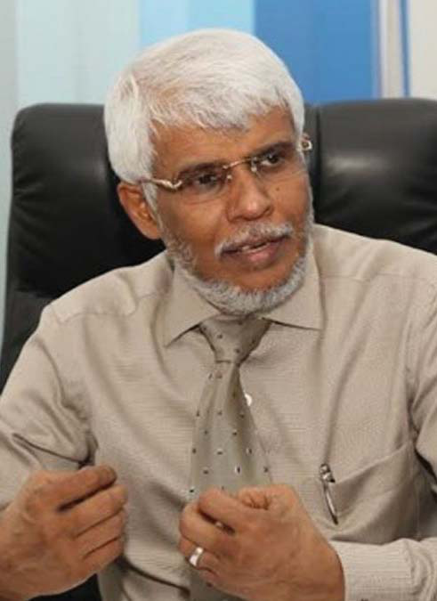
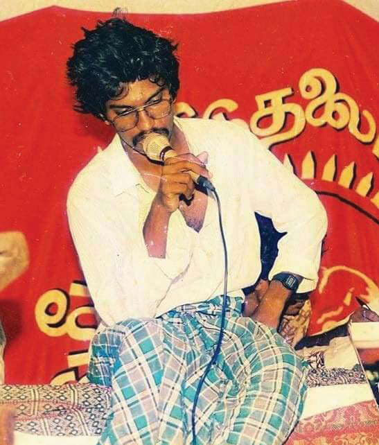
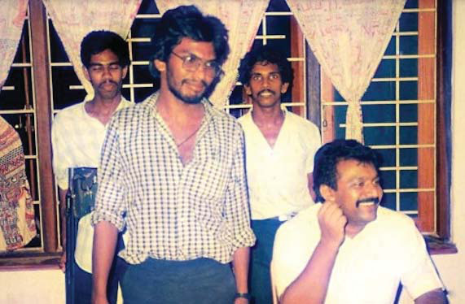
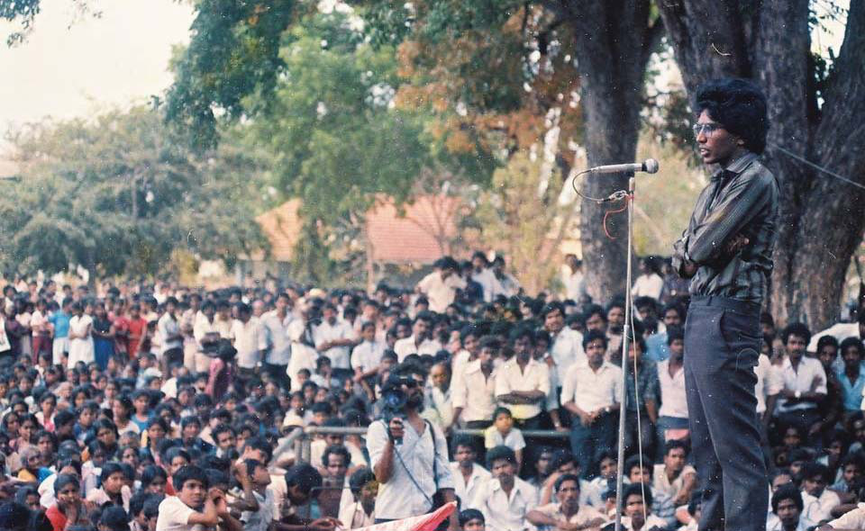
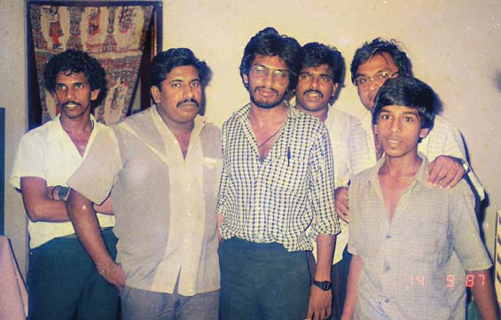
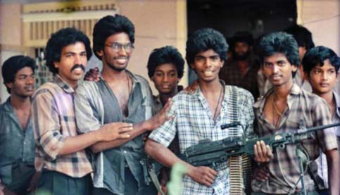
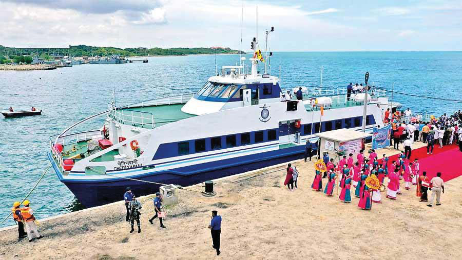
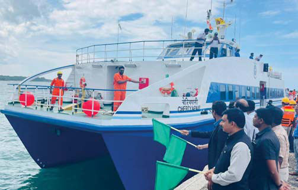
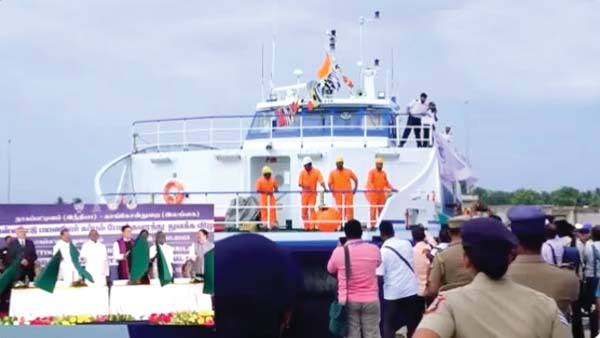

Court’s Verdict Puts Emphasis on Political Discipline Over Personal Ambitions
Court’s Verdict Puts Emphasis on Political Discipline Over Personal Ambitions
Jaff na Monitor hellojaff namonitor@gmail.com 6 Rajini Thiranagama diff erences in their vision. Some of these diff erences were subtle, yet they were signifi cant enough to set them apart from the views of the LTTE’s leader, Prabhakaran. Given the profound impact of their untimely demise, there should be a dedicated day to remember and honour their sacrifi ces, ensuring their legacies are never forgotten. Remembering Civilian Victims Looking beyond the militant ranks and political ambitions, it is crucial to shed light on the distressing ordeals endured by numerous Tamil civilians who became entangled in the LTTE’s web of violence, particularly during the fi nal phases of the Sri Lankan civil war. It became increasingly evident that the LTTE showed no hesitation in targeting its people. Individuals who attempted to escape LTTE-controlled areas were ruthlessly labelled as traitors and faced execution. Tamil individuals who dared to speak out against LTTE’s brutal recruitment strategy oft en became targets of the very organisation that claimed to champion their cause. Th ese brave individuals were silenced through violent means, leaving behind a haunting legacy of suppression. Th e horrifying extent of the LTTE’s brutality extended even to the sacred family bonds. Some fathers found themselves in the crosshairs of the LTTE and were mercilessly targeted and killed for the simple act of protecting their sons and daughters from forced conscription by the organisation. In light of these immense tragedies, the lack of an offi cial day to honour those who suff ered at the hands of the LTTE stands out starkly. Th eir tales of sacrifi ce, enduring pain, and lost lives warrant a distinct place in our shared history. Establishing such a commemorative day would not only immortalise their memories but also emphasise the paramount importance of preserving freedom of expression and valuing a diversity of opinions. Th e recent Supreme Court decision confi rming the removal of ex-Minister Naseer Ahmad from the Sri Lanka Muslim Congress (SLMC) has led to the forfeiture of his position in the parliament. In his place, Ali Zahir Moulana has taken the oath as a Member of Parliament, representing the SLMC. Th is verdict is consequential for political entities, emphasizing the importance of upholding discipline and discouraging members from switching allegiances for personal benefi ts rather than genuine political reasons. Th is decision empowers political parties to foster consistency and unity within their ranks. It indicates that members acting against the party’s collective decisions risk losing their parliamentary positions. Given the present political dynamics, such a ruling is poised to assist both the ruling and opposition parties preserve stability. Court’s Verdict Puts Emphasis on Political Discipline Over Personal Ambitions MONITOR MEMO

Jaff na Monitor hellojaff namonitor@gmail.com 7 The Dual Legacy of Thileepan R ecent incidents involving the vandalization of a memorial fl oat commemorating Th ileepan by a Sinhala mob have brought his multifaceted legacy back into the spotlight. Th ileepan's determination during his fast unto death is unquestionably commendable, bearing a resemblance to acts like that of the Buddhist monk Th ích Quảng Đức, who died by self-immolation. Yet, it's crucial to consider his commitment in the context of his broader life journey. While Th ileepan has oft en been referred to as the Gandhian face of the LTTE, eyewitness accounts suggest a history interwoven with acts of armed violence. For instance, it's documented in "Broken Palmyra" that Th ileepan had participated in public executions, notably a lamp post killing in Urumpirai merely months before his notable hunger strike. Such acts starkly contrast the peaceful image associated with Gandhian principles. Another dark chapter in Th ileepan's past is his alleged involvement in the abduction and murder of Premanda, the brother of Douglas Devananda, a former militant turned cabinet minister. Other episodes include the ruthless elimination of a principled Jaff na University student, Vijitharan, followed by threats against protesting student union members, culminating in the fatal shooting of Vimaleswaran, another student activist. Th e accusations don't end there. Th ileepan's purported role in killing young TELO militants, including child soldiers suff ering from severe eye diseases, paints a picture of a man whose actions were sometimes driven by extreme and violent ideologies. Th e episode at the Vattukkottai- Mavadi camp, where he reportedly showed no mercy even to ailing child soldiers, is a testament to this. It is clear that LTTE and its leader, Velupillai Prabhakaran, leveraged Th ileepan's hunger strike for political gain, rallying the Sri Lankan Tamils behind the LTTE's separatist cause. Th is strategy simultaneously catapulted Th ileepan into a position of reverence while obscuring the more violent aspects of his legacy. Inked by: Nedunchezhiyan OPINION


Jaff na Monitor hellojaff namonitor@gmail.com 8 However, while refl ecting on Th ileepan's legacy, today's political manoeuvres around his memory should not be overlooked. Th e Tamil National People's Front (TNPF), representing a segment of Sri Lankan Tamils, appears to capitalize on the profound sentiment associated with Th ileepan. Th is fringe political party and its national list MP, Selvarajah Kajendran, recently organized a rally that intriguingly passed through multiple Sinhala villages and towns, raising eyebrows about its intentions. Given the already delicate ethnic landscape of Sri Lanka, some intellectuals within the Tamil community argue that such actions by TNPF could risk further ethnic unrest. But beyond these political actions, their assertion as the singular authority on commemorating Th ileepan is viewed by many as deplorable. While most Sri Lankan Tamils hold a deep personal sentiment towards Th ileepan, TNPF's apparent aim to monopolize this collective grief, purportedly to amass funds from the Tamil diaspora, has cast a shadow on their motives. It's essential to strike a balance in our understanding. Celebrating Th ileepan solely as a peace-loving individual disregards the numerous accounts of his involvement in armed aggression. Conversely, reducing him merely to a violent militant doesn't do justice to the genuine conviction he displayed during his hunger strike. Understanding Th ileepan requires acknowledging his multifaceted nature. However, it is equally vital to remember the broader context and his violent undertakings. In reality, Th ileepan's life juxtaposes deep conviction and aggressive militarism. His dual legacy refl ects the broader complexities surrounding the LTTE and the Sri Lankan confl ict, reminding us of the importance of nuanced historical analysis. However, as we refl ect upon this, the current political plays, mainly by entities like the TNPF, urge us to remain vigilant and discerning.



Jaff na Monitor
hellojaff namonitor@gmail.com
9
F
our decades aft er civil war disruptions severed
the vital maritime link between India and Sri
Lanka, ferry services have triumphantly resumed
as of October 14th. Th is signifi cant event has been
celebrated by Indian Prime Minister Narendra Modi
and Sri Lankan President Ranil Wickremesinghe, who
see it as a pivotal step towards strengthening bilateral
ties, enhancing connectivity, promoting trade, and
revitalizing cultural links between the two nations.
Th e renewed ferry service connecting Tamil Nadu’s
Nagapattinam and Kankesanthurai in Jaff na, Srilanka,
aims to rekindle the age-old maritime connections that
have historically existed between these neighbouring
countries.
Th e newly launched high-speed ferry, named
‘Cheriyapani,’ is operated by the Shipping Corporation
of India (SCI) and boasts a capacity of 150 passengers.
Covering a distance of approximately 60 nautical
miles (110 kilometres) between Nagapattinam and
India and Sri Lanka Resume Ferry Services
Aft er 40-Year Hiatus:
BY:
Our Staff Reporter
A Milestone in Bilateral Relations


Jaff na Monitor
hellojaff namonitor@gmail.com
10
Kankesanthurai, the journey takes about 3.5
hours, depending on sea conditions.
During its inaugural voyage, the ‘Cheriyapani’
ferry carried 50 passengers from India to Sri
Lanka and returned with 38 passengers in
the evening. Th ese passengers expressed joy
at the opportunity to sail to Sri Lanka and
experience this historic moment.
Indian Prime Minister Narendra Modi
emphasized the signifi cance of the ferry
service, stating that it not only brings the two
cities closer but also fosters closer ties between
the people and hearts of India and Sri Lanka.
He described this as the beginning a new
chapter in diplomatic and economic relations
between the two countries.
Modi underlined the shared history of culture,
commerce, and civilization between India and
Sri Lanka, pointing out that Nagapattinam
and nearby towns have been renowned for
sea trade with various countries, including Sri
Lanka. He also noted the historical importance
of the port of Poompuhar, which is mentioned
as a hub in ancient Tamil literature.
Additionally, Modi mentioned the
literary works of the Sangam age, such as
‘Pattinappalai’ and ‘Manimekalai’, which
describe the movement of boats and ships
between the two countries. He invoked the
great poet Subramania Bharti’s song ‘Sindhu
Nadhiyin Misai,’ which mentions a bridge
connecting India and Sri Lanka and highlights
how the ferry service rekindles these historical
and cultural connections.
Sri Lankan President Ranil Wickremesinghe
expressed his enthusiasm, stating that the ferry
service is crucial in enhancing connectivity
between the two nations. He refl ected on the
historical signifi cance of people traversing
the Palk Strait for thousands of years,
contributing to developing their cultures and
trade. Wickremesinghe credited the return of
peace as the catalyst for re-establishing this
sea connectivity. He thanked Prime Minister
Modi and the Indian Shipping Corporation for
making it a reality.
T
he commencement of a passenger ferry service between
Kankesanthurai in Sri Lanka’s Northern Province and
Nagapattinam in Tamil Nadu last week marks the fulfi lment of
a long standing demand across the Palk Strait for the revival
of a sea link. Sri Lanka’s civil war, which lasted nearly 25
years, had disrupted the movement of people and goods on
traditional maritime routes — Talaimannar to Rameswaram
and Colombo to Th oothukudi. Twelve years ago, a ferry
service between Colombo and Th oothukudi
did not last long due to a lack of patronage.
Th ere was also the popular Boat Mail
connecting Chennai and Talaimannar via
Rameshwaram and Dhanushkodi through
a rail link and a ferry, which nonagenarians
recall. Th e cyclone in December 1964,
which devastated Dhanushkodi, and the
civil war ended the multiple transport links, forcing peoples
in both countries to rely only on air services, which cover
Madurai and Trichy too these days. Ten months ago, the
Chennai Jaff na air service resumed, and according to an
estimate, 10,000 tourists from India visited Sri Lanka over
six months. Th e inauguration of a private cruise service in
Chennai four months ago facilitated visits by 6,000 passengers
to the island nation. As pointed out during the launch of the
Nagapattinam Kankesanthurai service, the development would
not only strengthen cultural, economic, and civilisational
ties but also improve cooperation in disaster management
and maritime security. It may, at some stage, also enable the
seamless voluntary repatriation of thousands of refugees from
Sri Lanka living in Tamil Nadu. Normal operations of the
service — it ran for a few days this month — are to resume
in January in view of the northeast monsoon. By then, it is
hoped that the authorities, especially in India, would take
steps in the interest of the sustainability of the ferry service.
With a fare of around ₹7,670 a person for a journey, the
diff erence between this rate and airfares is not competitive
enough for anyone to opt for the ferry. Increasing the baggage
allowance of 50 kg would help. Th e provision of amenities at
Nagapattinam port, such as a dormitory and improving rail
connectivity at Nagapattinam, require attention, as passengers
from Sri Lanka are sure to want to visit Chennai. On the part
of Sri Lanka, economists, policymakers, and activists should
consider promoting economic ties, including exports from the
Northern Province, given the inherent asymmetrical bilateral
relationship. Ultimately, sustained policy attention is critical
to making this service a success. Aft er all, Nagapattinam
is predominantly agrarian and one of the economically
backward spots of Tamil Nadu. So, it is up to the governments
of the two countries to ensure that the Nagapattinam-
Kankesanthurai ferry service does not meet the fate of the
Th oothukudi Colombo service.
Sea service: Ferry between Tamil Nadu and
Northern Sri Lanka holds much potential
Editorial from
“Th e Hindu”
Newspaper -
October 19, 2023
Th is editorial is
sourced from the
much-respected
“Th e Hindu”
newspaper from
India.
Jaff na Monitor hellojaff namonitor@gmail.com 11 Monsoon Suspends Ferry Until January Th e ferry service aimed to boost religious tourism between the two countries, given the proximity of numerous pilgrimage sites. Notably, spiritual centers such as Velankannai, Nagore, and Th irunallar are situated near Nagapattinam. Additionally, destinations like Th anjavur, Madurai, and Trichy are within a reasonable distance. Similarly, historic temples like the Naguleswaram and Maviddapuram Kandaswamy are located near Kankesanthurai. Ferry Boosts Religious Tourism Th e ferry service aimed to boost religious tourism between the two countries, given the proximity of numerous pilgrimage sites. Notably, spiritual centers such as Velankannai, Nagore, and Th irunallar are situated near Nagapattinam. Additionally, destinations like Th anjavur, Madurai, and Trichy are within a reasonable distance. Similarly, historic temples like the Naguleswaram and Maviddapuram Kandaswamy are located near Kankesanthurai. Indian External Aff airs Minister S. Jaishankar hailed this milestone as a “big step for people- to-people contacts between India and Sri Lanka.” Th is initiative seeks to revive historical maritime connections from the early 1900s when the Indo-Ceylon Express, a train service between Chennai and Colombo via Th oothukudi, ceased operations in 1982 due to the civil war in Sri Lanka. Th e resumption of ferry services marks a signifi cant step towards rekindling historical ties and forging stronger relations between India and Sri Lanka in the modern era. As the ferry ‘Cheriyapani plies the waters of the Palk Strait, it carries with it the hope of a brighter future and the rekindling of cultural and economic exchanges between these two South Asian neighbours. Archaeological excavations in and around Nagapattinam have uncovered relics, pottery, and artefacts that indicate direct evidence specifi c to the Nagapattinam- Kankesanthurai ferry route’s history of maritime trade and interactions. Th ese discoveries corroborate the historical signifi cance of the region’s maritime connections. Sangam literature, which dates back over two thousand years, references maritime trade and voyages between India and Sri Lanka. Works such as the ‘Pattinappalai’ and ‘Manimekalai’ describe these regions’ active trade and cultural ties. “Pattinappalai” represents the beauty and prosperity of ancient Tamil port cities, including Poompuhar. In this Sangam work, Poompuhar is celebrated for its maritime trade, bustling port activities, and its role as a signifi cant trading centre during the Sangam period. Th e historical link between Nagapattinam and Kankesanthurai dates back approximately 3000 years to ancient times when both regions fl ourished as bustling maritime trade hubs. Historical records show these coastal towns were pivotal in facilitating trade between India and Sri Lanka. Th ey were vital conduits for exchanging goods such as spices, textiles, gemstones, and other valuable commodities.
